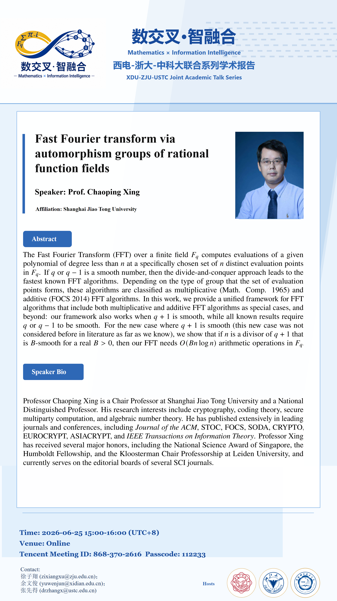

{kind=link}

邢朝平教授 / Prof. Chaoping Xing
上海交通大学 / Shanghai Jiao Tong University
Title: Fast Fourier transform via automorphism groups of rational function fields
- Time
- 2026-06-25, 15:00-16:00
- Venue
- Tencent Meeting ID: 868-370-2616, Passcode: 112233
The Fast Fourier Transform (FFT) over a finite field F_q computes evaluations of a given polynomial of degree less than n at a specifically chosen set of n distinct evaluation points in F_q. If q or q − 1 is a smooth number, then the divide-and-conquer approach leads to the fastest known FFT algorithms. Depending on the type of group that the set of evaluation points forms, these algorithms are classified as multiplicative (Math of Comp. 1965) and additive (FOCS 2014) FFT algorithms. In this work, we provide a unified framework for FFT algorithms that include both multiplicative and additive FFT algorithms as special cases, and beyond: our framework also works when q + 1 is smooth, while all known results require q or q − 1 to be smooth. For the new case where q + 1 is smooth(this new case was not considered before in literature as far as we know), we show that if n is a divisor of q + 1 that is B-smooth for a real B > 0, then our FFT needs O(Bn log n) arithmetic operations in F_q.
{kind=link}
{kind=link}